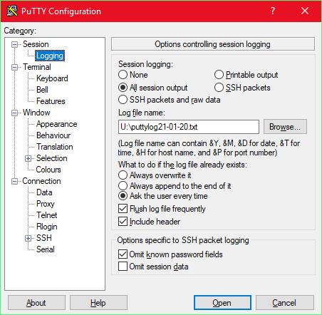
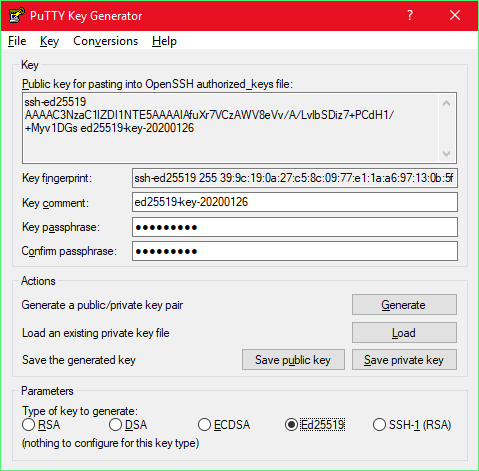

<html>
		<!DOCTYPE html>
<head>
	<meta http-equiv="Content-Type" content="text/html; charset=utf-8">
	<title>Отчёт по SSH</title>
	<link rel="stylesheet" type="text/css" href="style.css">
</head>
<body>
	<div class = "info">Secure Shell (SSH)<p>
	Отчёт по лабораторной работе <p> 
	Саморуков Александр<p>
	2020-02-23
	</div>
	<div class="container">
		<div class="blocks">
				<p><span>1.1</span>В качестве SSH клиента был выбран PuTTY. С его помощью был получен санкционированный доступ к удалённой системе inco@10.0.11.177</p>
				<div class="report">
					
					<div class="report_text"><pre>Using username "inco".
inco@10.0.11.177's password: 
Linux kc203-03 4.9.0-11-amd64 #1 SMP Debian 4.9.189-3 (2019-09-02) x86_64
						
The programs included with the Debian GNU/Linux system are free software;
the exact distribution terms for each program are described in the
individual files in /usr/share/doc/*/copyright.
						
Debian GNU/Linux comes with ABSOLUTELY NO WARRANTY, to the extent
permitted by applicable law.
Last login: Thu Feb 13 19:29:15 2020 from 10.0.22.220</pre></div>
					</div>
		</div>
		<div class="blocks">
				<p><span>1.2</span>После изучения списка систем с общим доступом был выбран sdf.org, после подключения к системе был пройден этап регистрации и получен доступ.</p>
				<div class="report">
					<pre>
login as: new

You will now be connected to NEWUSER mkacct server.
Please login as 'new' when prompted.

THIS MAY TAKE A MOMENT .. Trying 205.166.94.20...
[RETURN] s 		

Connected to 205.166.94.20.
Escape character is 'off'.	
					</pre>
					<pre>
____________________________________________
[members in 'thxmoo']
						
akulova.283asp@faeroes    mimilasyxa@faeroes
						
[25-Jan-20 02:30:00]
[akulova.283asp] hello
[mimilasyxa] helo
</pre>
					</div>
		</div>
		<div class="blocks">
				<p><span>1.3</span>Терминальный сеанс с удалённым сервером был записан с помощью встроенной функции записи логов в Putty.</p>
				<div class="report">
					
					
					</div>
		</div>
		<div class="blocks">
				<p><span>1.4</span>В моём случае доступ к интернету был ограничен, поэтому Putty был настроен на использование proxy с помощью cntml.</p>
				<div class="report">
					
					<div class="report_text"><pre>
### .cntlm.conf  -*- Default-Generic -*-
Username        samorukov.283asp
Domain          STUD
						
Auth            NTLMv2
PassNTLMv2      z
NTLMToBasic     no
							
Proxy           proxy-class.asu.ru:3168
Listen          4780
							
### .cntlm.conf ends here						
					</pre></div>
Для того чтобы cntml использовал мой конфиг необходимо было написать в командной строке:		
<pre>				
H:\putty>cntlm.exe -c cntml.conf -I
Password:
</pre>
					</div>
		</div>
		<div class="blocks">
				<p><span>1.5</span>Для сохранения настроек Putty, используемых для доступа к серверу, в отдельный файл необходимо экспортировать ветку <b>Компьютер\HKEY_CURRENT_USER\Software\SimonTatham\PuTTY\Sessions</b> </p>
		</div>
		<div class="blocks">
				<p><span>1.6</span>Была сгенерирована пара ключей с помощью PuttyGen, после этого ключи были записаны в файл ./ssh/authorized_keys, теперь для подключения к серверу не требуется ssh ключ и его можно удалить из Putty.<button class="key"> [KEY] </button><a href="/report/files/public_key" download="/report/files/public_key">Скачать Public ключ</a></p>
				<div class="report" >
					
					</div>
		</div>
		<div class="blocks">
				<p><span>1.7</span>В pagent был загружен закрытый ключ, который позволяет зайди на удалённый сервер без ввода пароля, если убрать его то будет необходимо сново вводить пароль</p>
				<div class="report">
					
<pre>
Using username "inco".
Authenticating with public key "ed25519-key-20200126" from agent
Linux kc203-03 4.9.0-11-amd64 #1 SMP Debian 4.9.189-3 (2019-09-02) x86_64
		
The programs included with the Debian GNU/Linux system are free software;
the exact distribution terms for each program are described in the
individual files in /usr/share/doc/*/copyright.
		
Debian GNU/Linux comes with ABSOLUTELY NO WARRANTY, to the extent
permitted by applicable law.
Last login: Thu Jan 30 19:33:18 2020 from 10.0.22.249
</pre>
					</div>
		</div>
		<div class="blocks">
			<p><span>2.1</span>С помощью pscp на удалённый сервер были переданы два файла <b>proc3.exe</b> и <b>task.txt</b>, для передачи файлов была использована команда <b>pscp.exe [Путь до файла на машине] [Путь назначения] </b> </p>
			<div class="report">
<pre>
F:\fyu\lab1\putty>pscp.exe -load xx task.txt inco@10.0.11.247:.
task.txt                    | 1 kB |   1.5 kB/s | ETA: 00:00:00 | 100%

F:\fyu\lab1\putty>pscp.exe -load xx proc3.exe inco@10.0.11.247:
proc3.exe                  | 226 kB | 226.6 kB/s | ETA: 00:00:00 | 100%

inco@kc203-03:~$ ls
proc3.exe  task.txt
</pre>
				</div>
	</div>
	</div>
	<script>let key = document.querySelector(".key")
			 key.addEventListener("mouseup", function(){
				 alert("ssh-ed25519 AAAAC3NzaC1lZDI1NTE5AAAAIAfuXr7VCzAWV8eVv/A/LvlbSDiz7+PCdH1/+Myv1DGs")
			 })
	</script>
</body>
</html>